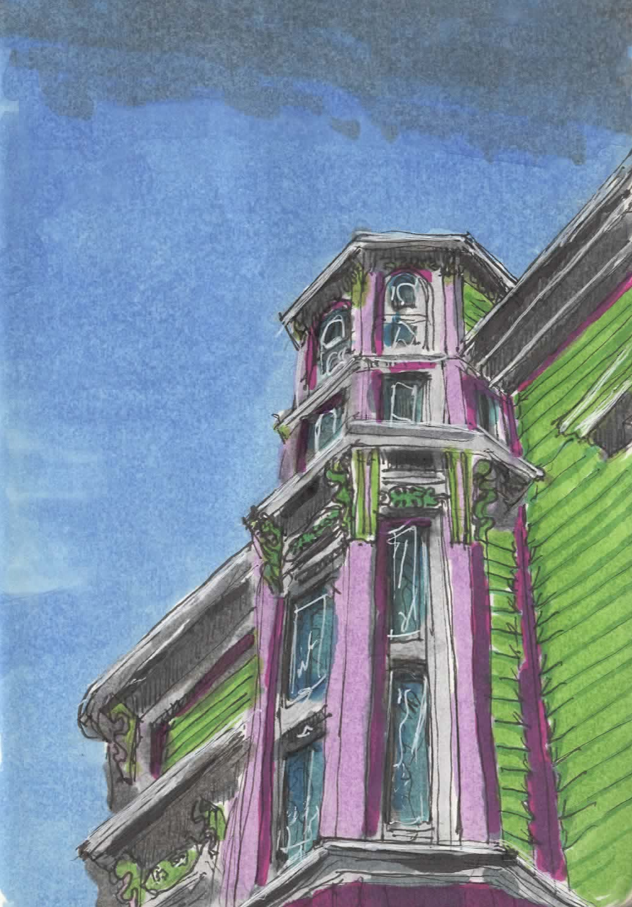

Lunenburg Events
Music, theatre, arts, and community — for the next two weeks.
Upcoming events in Lunenburg
Wednesday, September 30
10:30 AM
— Truth & Reconciliation — at Fisheries Museum of the Atlantic
Thursday, October 1
8:00 AM
— Lunenburg Farmers Market — at Lunenburg Community Centre
7:00 PM
— "Making Sense of Chaos" Exhibition by Terry Havlis Drahos — at Lunenburg School of the Arts
Friday, October 2
5:00 PM
— First Fridays Art Walk — at Downtown Lunenburg
Saturday, October 3
10:30 AM
— South Shore Oktoberfest — at Fisheries Museum of the Atlantic
2:00 PM
— Sarah Hagen - Goldberg Variations — at Old Confidence Lodge
7:00 PM
— Mean Girls Day — at Old Confidence Lodge
Thursday, October 8
8:00 AM
— Lunenburg Farmers Market — at Lunenburg Community Centre
Monday, October 12
11:00 AM
— Dolly Tribute Brunch — at Old Confidence Lodge
Loading events…